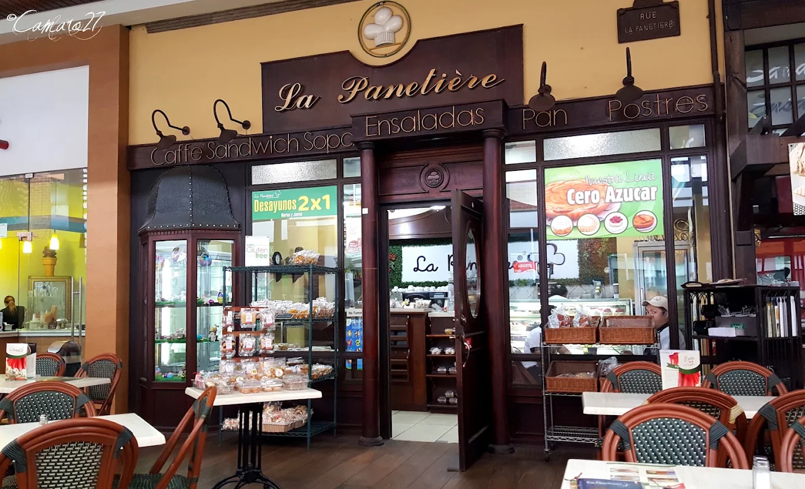

Desde 1993 · El Salvador
Casa del Mejor
Cardenal de Fresas
Una mezcla de tradición con personalidad única
Especialidad
Receta Insignia

Desde 1993 · El Salvador
Una mezcla de tradición con personalidad única

Nuestra Historia
Nacimos ofreciendo originales recetas de pastelería internacional que incluían desde pasteles tradicionales hasta repostería de gusto refinado. Con el pasar del tiempo, y de la mano de la satisfacción de nuestros clientes, comenzamos a ofrecer más opciones como sándwiches, pizzas, crepas, ensaladas, bebidas frías y calientes, todo bajo el concepto de restaurant-café gourmet.
La Panetière esencialmente combina el gusto francés, el sabor italiano pero sobre todo el espíritu salvadoreño con excepcionales y famosas recetas exóticas del mundo culinario. Nuestra especialidad es el cardenal de fresas: una mezcla de tradición con personalidad única. Nos enorgullece ser la casa del mejor Cardenal de Fresas en El Salvador.
«Nuestra pasión es y será por siempre ofrecer el lugar ideal para que compartas tus mejores momentos.»